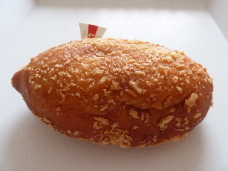
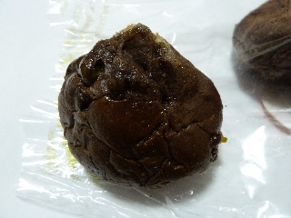
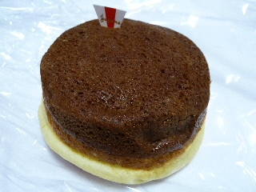
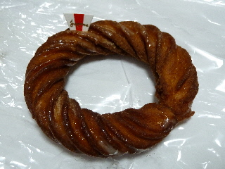
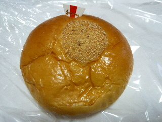
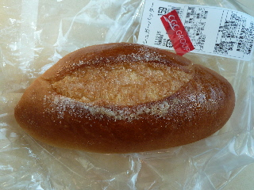
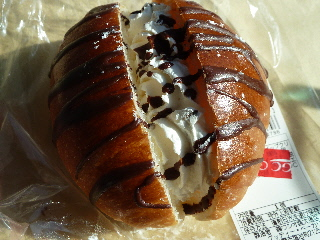

グッディーの完熟トマトのカレーパン。
2013/09/15
味とは関係ないですが、
グッディーってパンを紙のトレーに入れて買います。
パン屋さんだったら、パンを1個1個袋に入れてもらえるんですが、今回はそれがありません。
カレーパンは袋がないと食べにくいです。

トマトカレーのパンですね。
カレー味がしっかりあるので、食べやすかったです。
スパーのグッディー各店で販売しているパンです。
2013/09/15
味とは関係ないですが、
グッディーってパンを紙のトレーに入れて買います。
パン屋さんだったら、パンを1個1個袋に入れてもらえるんですが、今回はそれがありません。
カレーパンは袋がないと食べにくいです。

トマトカレーのパンですね。
カレー味がしっかりあるので、食べやすかったです。
2013/02/19
とっても色が濃いパンですね。
4個入りで199円です。
近頃グッディーさんではショーケースにパンが入ってて、それを自分で一個一個袋に入れてパンを買うんですが、ちょっと今日はめんどくさいって思ったので、始めっから袋に入ったパンを買いました。
楽ちんでした。

チョコたっぷりで甘そうに見えますが、意外と軽いです。
たまにあるチョコチップを食べると甘いですが、パンはそんなに甘くなく食べやすかったです。
オレンジ味も分かり易かったです。
2012/12/22
プリンパンって見た目だけじゃん！的なパンが多いですが、これは中にクリームが入っているので、ちょっとプリンっぽかったです。

でも、ちょっと見た目がプリンっぽくないかも？

ここのパンは紙が刺さってました。
ドーナッツにもプスっと。

あんぱんにもプスッと。
これってお洒落なのかな？なんか面白いのでOKなんですけど。
2011/12/13
シュガーバターパンは2個で159円でした。

少し大きめのパンが2つで159円なので安いですね。
グッディーのパンはなんか安くていいなー。
上成店で買ったんですけど、作っているのは医大通り店みたいです。
こんどそっちのお店にも行ってみたいっておもいました。
2011/12/13
クリーム。いいですよね。

クリームのパンって見ると食べたくなります。
クリームって美味しいですよね。
よくある感じのクリーム入ったロールパンですけど、普通に美味しくて良かったです。
79円でした。
ちょっとお買い得な気分がしました。
お店によって置いてあるパンが違ったりするのかな？